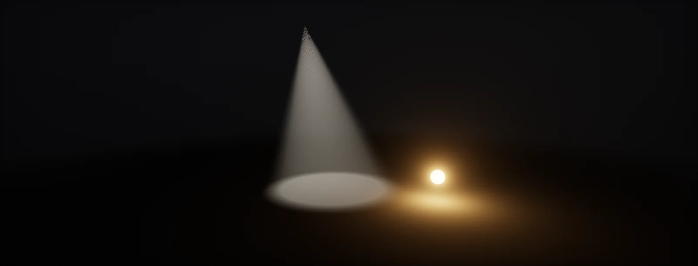

Light Types and Falloff
Point, spot, sun and area lights each follow a few lines of maths: how light fades with distance, fills a cone, softens shadows and adds up across a scene.

Point lights and a finite range
A point light obeys the inverse-square law: at twice the distance, a quarter of the light. Physically that never reaches zero, so every light would touch every pixel of the scene. Engines give each light a range and fade it to exactly zero at that range, while keeping the physical curve close to the light. The common window from Unreal (also used by Frostbite and HDRP):
The +1 (in metres²) avoids dividing by zero when a surface touches the light. Choose the range so the window bites only where the light is already dim; a range that is too short makes lights end in a visible ring.
Spot lights
A spot light is a point light with a cone. Its brightness depends on the angle between the light's axis and the direction to the surface, compared through the dot product (a cosine). Inside the inner angle it is at full strength, outside the outer angle it is off, and in between it fades smoothly:
Computing with cosines instead of angles saves an acos per pixel: the shader compares dot(L, axis) directly with cos(outer) and cos(inner), both precomputed on the CPU.
How bright is a spot in lumens?
A bulb's lumens spread over a whole sphere (I = Φ / 4π). Put a reflector behind it and the same lumens go into the cone only, so the light in each direction rises as the cone narrows. A cone of full angle θ covers a solid angle of 2π(1 − cos(θ/2)):
Engines differ on whether narrowing a spot keeps the lumens (and gets brighter) or keeps the candela (and gets the same brightness in a smaller area). Know which one your engine uses before you light with real values.
Spot lights in Lumen units concentrate the light into the cone only when Reflector is enabled; without it they behave like a point light masked by the cone.
URP intensity is unitless: narrowing the cone does not change the brightness on the lit area.
In Lumens mode the total stays constant, so a narrower cone is brighter. In Candelas mode the brightness per direction stays constant.
The sun
The sun is so far away that its rays arrive parallel and there is no falloff: a directional light has a direction and an illuminance in lux, about 100 000 lx at noon. The light on a surface is just E · cos θ (Lambert). But the sun is not a point: its disc covers about 0.53° of the sky. That is why shadows are sharp at the foot of a pole and blurry at its top:
Shadow filters that widen with this distance (PCSS, contact-hardening shadows, ray-traced shadows with a sun angle) reproduce it; a fixed PCF width cannot.
Area lights
Real lamps have a size: a window, a softbox, a neon tube. Surprisingly, for a surface that faces a glowing sphere, the exact light it receives equals the point-light formula. The difference appears when the surface tilts away: part of a large sphere stays above the surface's horizon after its centre has sunk below it, so the surface keeps receiving light where a point light would leave it black:
Area lights also change specular highlights: a rectangular light gives a rectangular highlight. Engines evaluate rectangle and disc lights with an analytic method based on linearly transformed cosines (LTC), which costs more than a point light but far less than sampling the area.
IES profiles
A real fixture does not shine equally in all directions: a downlight sends most light straight down with a soft edge, a wall washer throws it sideways. Manufacturers publish this as an , a table of candela by angle. The engine looks it up per pixel with the angle to the light, like a 1D (or 2D) texture. Here a profile is modelled by a simple formula, a beam plus some spill:
IES profiles store the shape and often the absolute intensity. Lights with a profile look markedly more real in architecture and interiors, at the cost of one extra texture fetch.
Many lights: what they cost
Every light whose range touches a pixel adds one lighting calculation to that pixel. Modern renderers split the screen (and the depth range) into tiles or clusters and keep a list of the lights that touch each one, so a pixel only loops over its own list. The average list length depends on how much of the screen each light's sphere covers, which falls with the square of its distance (perspective):
Small ranges are the cheapest optimisation: halve every light's range and each covers a quarter of the screen. Shadowed lights cost far more again (shadow passes).
HDRP uses tiled and clustered light lists for all lights; the Light Loop debug views show how many lights touch each tile. Max lights per screen are set in the HDRP asset.
URP Forward+ removes the per-object light limit by using clustered lists; the older Forward path allows a few additional lights per object. Deferred renders each light's volume.
Deferred shading with tiled culling by default. The Light Complexity view mode shows how many lights affect each pixel; Attenuation Radius is the range.
Build it in Unity HDRP
Every light type of this unit is a setting on HDRP's Light component. For custom lighting in Unlit graphs (stylised characters, VFX), the files send a few lights to your shader and evaluate the unit's falloff and cone formulas there. Written for Unity 6 with HDRP 17; Unity 2022 LTS works the same apart from a few renamed menu entries.
- Light component: Type Point, Spot (Shape Cone, Pyramid or Box), Directional or Area (Rectangle, Tube, Disc). Units per type: Lumen, Candela, Lux, Nits or EV100. Range is the r of the windowed falloff.
- Spot lights: Outer Angle and Inner Angle (%) give the cone of spot lights. Tick Reflector to keep the lumens constant when you change the angle (the formula in lumens to candela).
- IES: drag an
.iesfile into the project; it imports as an IES profile. Assign it in the light's Emission > IES Profile slot. - Area lights are real-time for Rectangle and Tube; Disc is baked only. Check light counts with the Rendering Debugger (Lighting > Tile/Cluster Debug), which colours tiles by how many lights touch them.
- Custom lighting: add
CustomLightsToShader.csto any object and list point or spot lights. In an Unlit graph, add a Custom Function node. Set Type toFile, Source toPunctualLights.hlsland Name toPunctualLights(without the_floatsuffix). Add the inputs PositionAWS (Vector 3), NormalWS (Vector 3), Albedo (Vector 3) and the outputs Color (Vector 3), in that order and with those types: they must match the function's parameters. Position: Position node inAbsolute World.
#ifndef ATLAS_PUNCTUAL_LIGHTS_INCLUDED
#define ATLAS_PUNCTUAL_LIGHTS_INCLUDED
#define ATLAS_MAX_LIGHTS 8
float4 _AtlasLightPos[ATLAS_MAX_LIGHTS]; // xyz absolute world position, w range
float4 _AtlasLightColor[ATLAS_MAX_LIGHTS]; // rgb colour x brightness
float4 _AtlasLightDir[ATLAS_MAX_LIGHTS]; // xyz direction the spot points, w = 1 for spot lights
float4 _AtlasLightCone[ATLAS_MAX_LIGHTS]; // x cos(outer / 2), y cos(inner / 2)
int _AtlasLightCount;
void PunctualLights_float(float3 PositionAWS, float3 NormalWS, float3 Albedo, out float3 Color)
{
float3 N = normalize(NormalWS);
Color = 0;
for (int i = 0; i < min(_AtlasLightCount, ATLAS_MAX_LIGHTS); i++)
{
float3 toLight = _AtlasLightPos[i].xyz - PositionAWS;
float d = length(toLight);
float3 L = toLight / max(d, 1e-4);
float r = max(_AtlasLightPos[i].w, 1e-3);
float window = saturate(1.0 - pow(d / r, 4.0));
float falloff = window * window / (d * d + 1.0); // physical near, exactly 0 at the range
float cone = 1.0;
if (_AtlasLightDir[i].w > 0.5)
{
float c = dot(-L, _AtlasLightDir[i].xyz);
cone = saturate((c - _AtlasLightCone[i].x) / max(_AtlasLightCone[i].y - _AtlasLightCone[i].x, 1e-4));
cone *= cone;
}
Color += Albedo * _AtlasLightColor[i].rgb * saturate(dot(N, L)) * falloff * cone;
}
}
#endifusing UnityEngine;
// Sends up to 8 point or spot lights to shaders as global arrays, for custom lighting in Unlit graphs.
[ExecuteAlways]
public class CustomLightsToShader : MonoBehaviour
{
public Light[] lights;
public float brightness = 4f; // unitless: Unlit output is not exposed by HDRP
const int Max = 8;
readonly Vector4[] pos = new Vector4[Max], color = new Vector4[Max], dir = new Vector4[Max], cone = new Vector4[Max];
static readonly int PosId = Shader.PropertyToID("_AtlasLightPos"), ColorId = Shader.PropertyToID("_AtlasLightColor"),
DirId = Shader.PropertyToID("_AtlasLightDir"), ConeId = Shader.PropertyToID("_AtlasLightCone"),
CountId = Shader.PropertyToID("_AtlasLightCount");
void Update()
{
int n = 0;
if (lights != null)
foreach (Light l in lights)
{
if (l == null || !l.isActiveAndEnabled || n == Max) continue;
if (l.type != LightType.Point && l.type != LightType.Spot) continue;
Vector3 p = l.transform.position;
pos[n] = new Vector4(p.x, p.y, p.z, l.range);
Color c = l.color.linear * brightness;
color[n] = new Vector4(c.r, c.g, c.b, 1f);
bool spot = l.type == LightType.Spot;
Vector3 f = l.transform.forward;
dir[n] = new Vector4(f.x, f.y, f.z, spot ? 1f : 0f);
cone[n] = new Vector4(Mathf.Cos(l.spotAngle * 0.5f * Mathf.Deg2Rad), Mathf.Cos(l.innerSpotAngle * 0.5f * Mathf.Deg2Rad), 0, 0);
n++;
}
Shader.SetGlobalVectorArray(PosId, pos);
Shader.SetGlobalVectorArray(ColorId, color);
Shader.SetGlobalVectorArray(DirId, dir);
Shader.SetGlobalVectorArray(ConeId, cone);
Shader.SetGlobalInt(CountId, n);
}
}The arrays always have 8 entries, because the size of a global array is fixed the first time it is set. HDRP's own lights are clustered on the GPU and have no such limit; use this only where you need full control of the response.
URP lights use Unity's classic intensity (unitless) and range; Forward+ in Unity 6 removes the per-object light limit. In custom URP graphs, loop over GetAdditionalLightsCount() and GetAdditionalLight(i, positionWS) instead of the C# script.
Point, Spot, Rect and Directional lights with units of candela, lumens or lux and an Attenuation Radius; Use Inverse Squared Falloff off gives a softer artistic falloff. IES files import as Texture Light Profiles and go into the light's IES Texture.
Sources and further reading
The formulas and engine details in this unit come from these references. Engine documentation changes between versions.
- NotesReal Shading in Unreal Engine 4Brian Karis · SIGGRAPH 2013The windowed inverse-square falloff and sphere and tube light approximations.
- TalkMoving Frostbite to Physically Based RenderingLagarde, de Rousiers · SIGGRAPH 2014Photometric units for punctual and area lights, spot attenuation, sun angular size.
- DocsFilament: LightingGooglePoint, spot, directional and photometric lights in a real-time renderer (section 5.2).
- PaperClustered Deferred and Forward ShadingOla Olsson, Markus Billeter, Ulf Assarsson · HPG 2012The clustered light lists used by modern engines.